Префектура Кагава · Тэсима · дом под аренду целиком
Умитота: старинный дом между морем и рисовыми полями
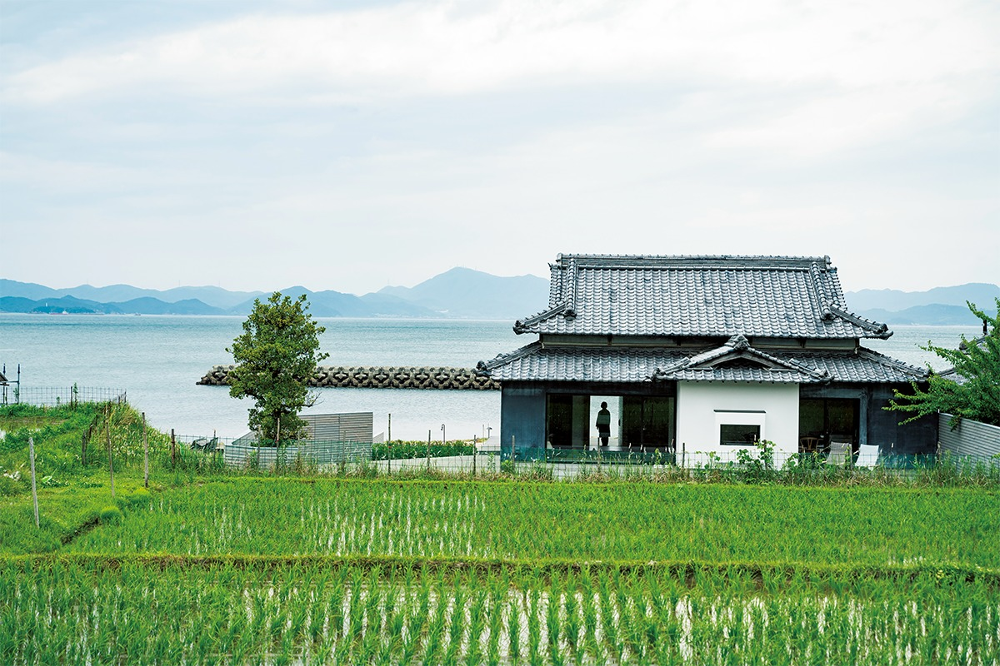
На Тэсиме, острове во Внутреннем Японском море, дизайнер Акира Минагава переделал полувековой дом под аренду целиком: живи как дома, гуляй на террасе между морем и рисовыми полями, ужинай в соседнем ресторане.
Жизнь
Остаться в своей естественной форме
Тэсима богата водой из источников: с давних времён здесь сеяли рис и растили огороды. Умитота и назван по своему положению: перед ним Внутреннее Японское море, сзади на южном склоне рисовые террасы. Дом стоит ровно между морем и полем.
Это дом под аренду целиком, где каждый проводит дни в своём ритме, среди простой природы острова. Внутри легко отыскать своё уютное место под настроение и погоду: терраса, что связывает поля с морем, ванная комната с окном на море, маленькая библиотека. А можно прожить отпуск поактивнее: в сезон можно поучаствовать в посадке риса, жатве или сборе овощей, а потом приготовить урожай на просторной кухне.
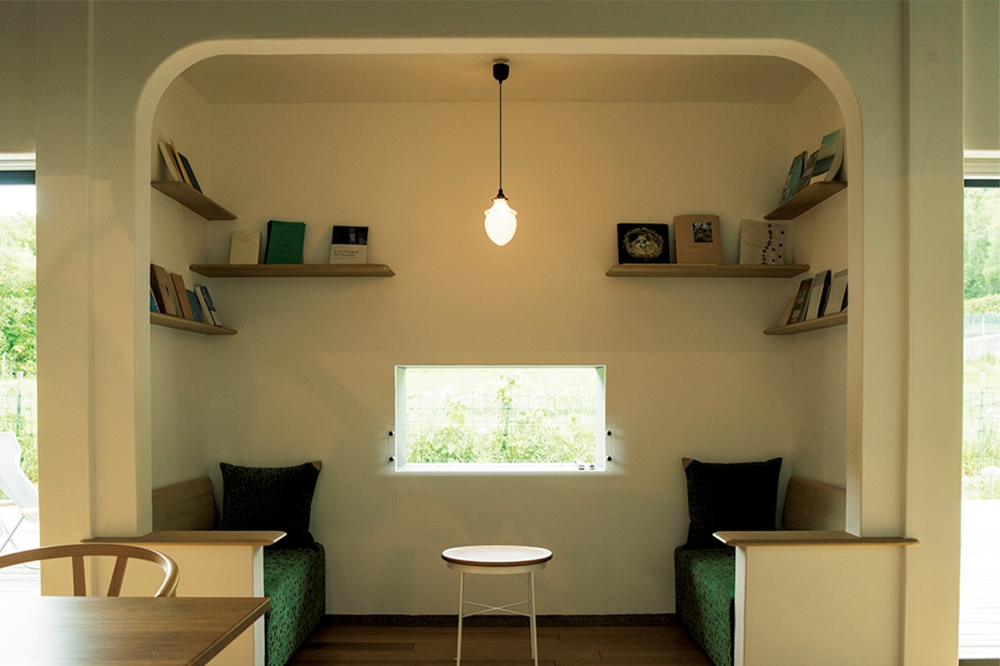
Авторы
Дизайн Минагавы, план Огаты
Проектом руководит Акира Минагава, создатель модного бренда minä perhonen, известного тканями со своими узорами. Планировку придумал его давний знакомый Синъитиро Огата, основатель компании SIMPLICITY. Повсюду в доме рассыпан их общий девиз: «остановиться, как в собственном доме».
Внутреннее убранство построено на тканях minä perhonen, а вещи в доме отобраны вручную.
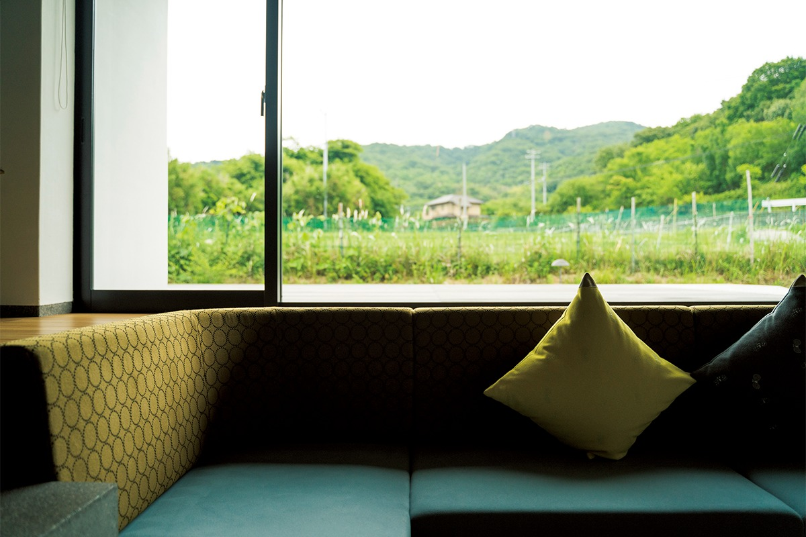
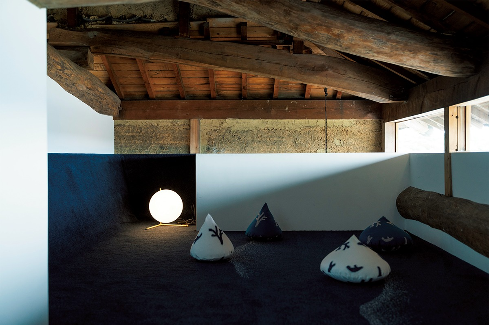
На внешней стене дома переливается инкрустация из раковин морского ушка (радэн): Минагава вместе с островитянами наклеивал каждую пластинку вручную. На закате, когда небо и море становятся розовыми, стена вспыхивает, будто розовая водная гладь.
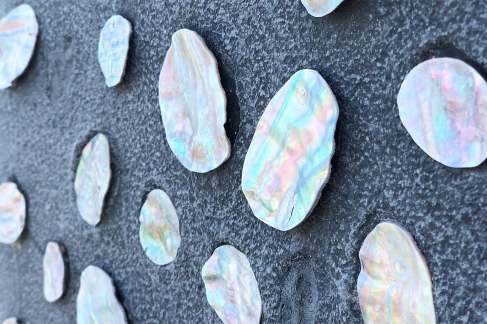
Ресторан
«Морской ресторан»: вкус Тэсимы
Ужин ждёт в шаговой доступности, в «Морском ресторане»: шеф Кэйта Симомати и пиццайоло Юсукэ Танака строят меню на итальянских приёмах и дарах дня. В Сэтоути ловят рыбу и моллюсков, а овощи привозят из собственного огорода.
Завтрак привозят из того же ресторана через специальную дверь: постояльцы и повара не пересекаются. Идею придумал сам Минагава.
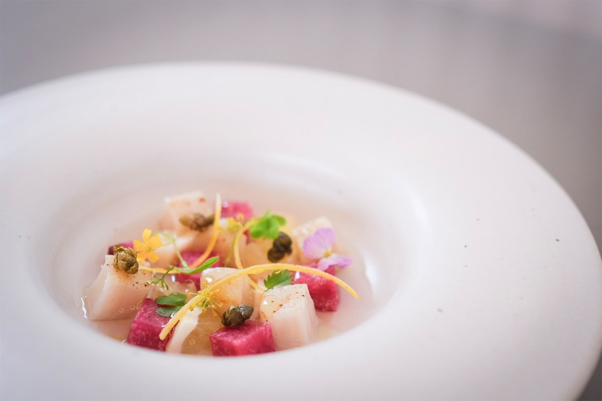
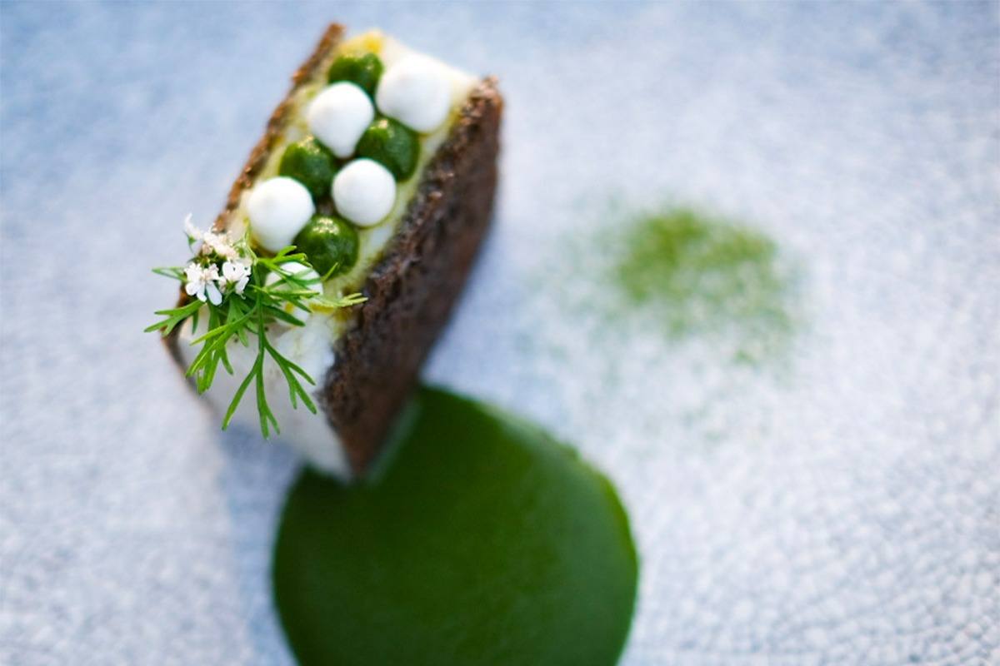
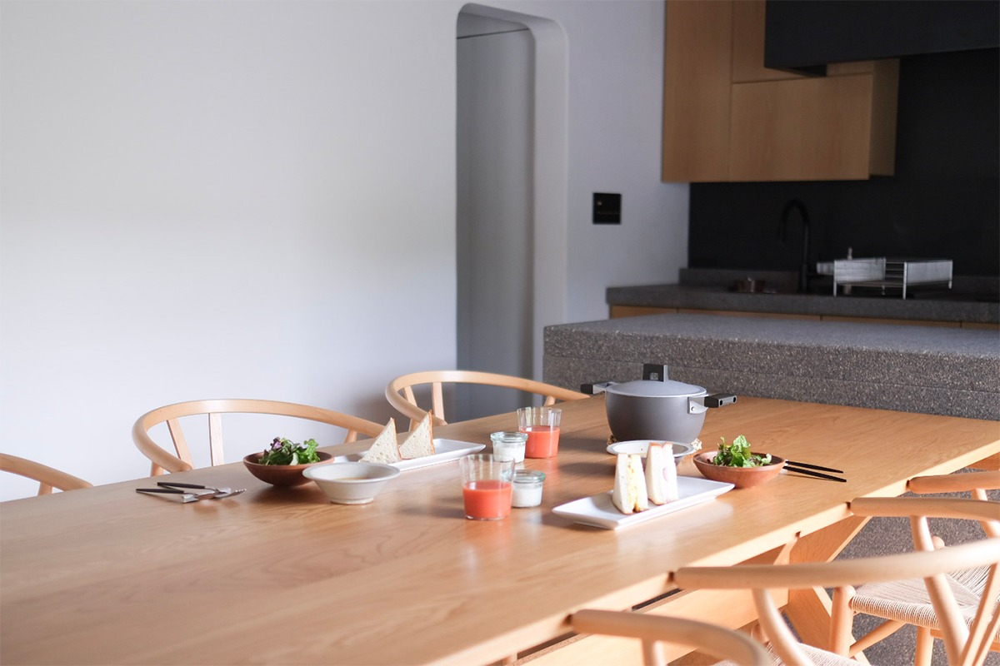
Дом
Заглублённая гостиная и ванная с окном на море
Гостиная начинается от входа: диваны врезаны в пол ниже его уровня, поэтому от дивана видно и море, и поле, островная картина целиком. В столовой висит люстра работы Морисон Кобаяси: в доме нашлось место и для искусства.
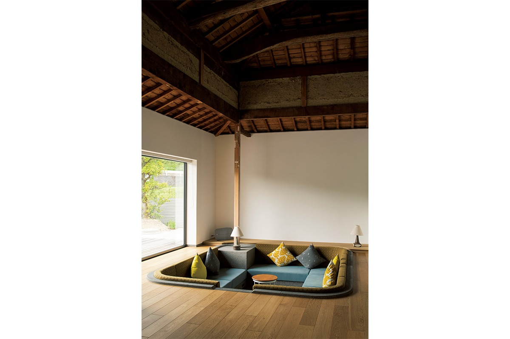
В просторной ванной щедро использован местный тэсимский камень: из ванны видно море, и тело отдыхает вместе со взглядом. Полотенца в номерах созданы вместе с мастерской KONTEX из Имабари в Эхимэ: на каждом вышита птица, ведь сверху Умитота со всеми постройками похож на птицу.
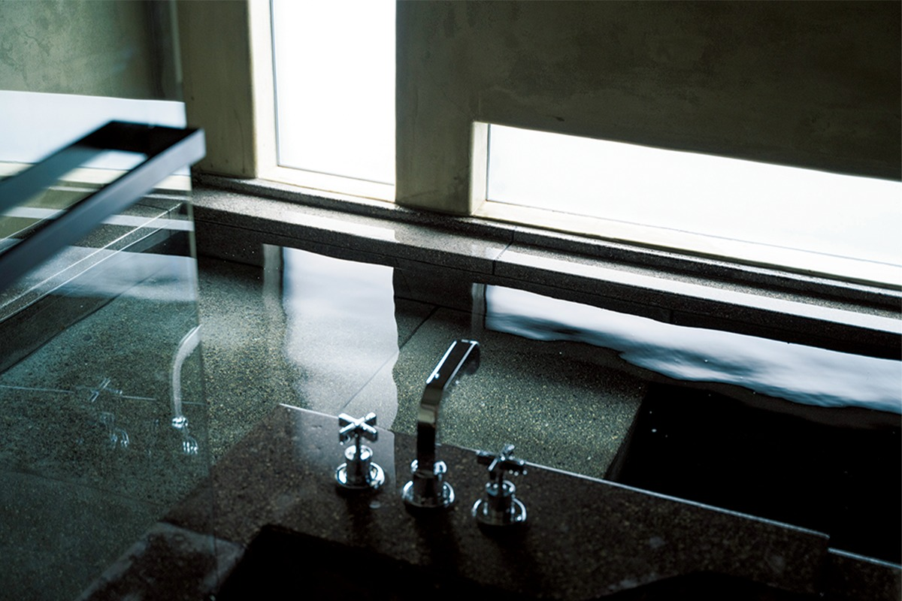
Полотенца продаются в магазине «Наминоми» при Умитота, в онлайн-магазине и в «Морском ресторане». Сезон у моря на Тэсиме стоит прожить в Умитота: открой входную дверь, и Внутреннее Японское море тут как тут.
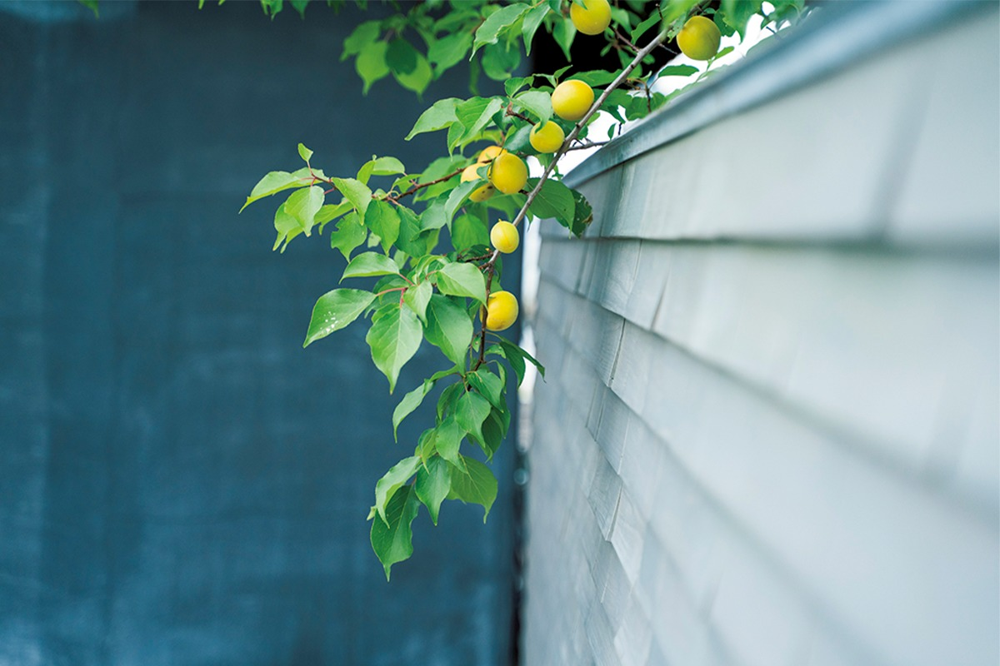
Умитота
- Адрес
- префектура Кагава, уезд Сёдзу, посёлок Тоносё, Тэсима, Иэура, 423-2
- Телефон
- +81 879-68-3386
- Вместимость
- до 6 человек, дом целиком
- Цены
- 77 000 иен за дом за ночь с ужином и завтраком плюс 19 600 иен с человека, с налогом
- Заезд / выезд
- 15:00 / 11:00
- Питание
- ужин в «Морском ресторане», завтрак доставляют в дом
- Сайт
- umitota.jp
Магазин «Наминоми»
- Адрес
- префектура Кагава, уезд Сёдзу, посёлок Тоносё, Тэсима, Иэура, 426
- Часы работы
- 11:00–17:00
- Выходные
- нерегулярные (о закрытии сообщают в соцсетях)
- Сайт
- umitota.jp/shop